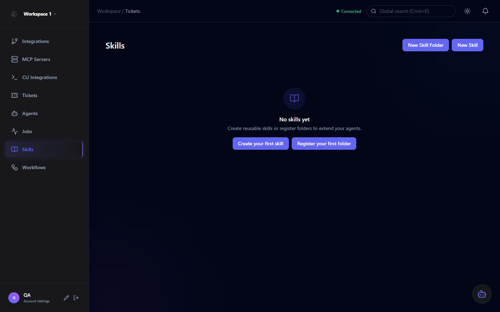

Skills & Tools
Skills are reusable instruction sets that can be attached to agents, extending their behavior beyond the base system prompt. Tools are the actionable capabilities agents can invoke during execution.

Skills
A Skill is a named, reusable piece of guidance — think of it as a modular instruction block that agents can load at runtime. Skills allow you to encode domain knowledge once and reuse it across multiple agents without copy-pasting instructions.
Each skill has a name, description, and content body — a markdown-formatted block of guidance that agents receive as part of their context.
Assign the same skill to multiple agents. Update the skill once and all agents automatically use the updated instructions on next execution.
Group related skills into folders for easy navigation — e.g., a "Clean Code" folder with separate skills for naming, functions, and comments.
Skills are workspace-scoped. Each workspace maintains its own skill library, keeping team-specific knowledge isolated.
Skill fields
| Field | Description |
|---|---|
| Name | Unique identifier for the skill within the workspace |
| Description | Short summary of what this skill teaches the agent |
| Content | Markdown-formatted instruction body injected into the agent's context |
| Folder | Optional — assign to a skill folder for organization |
Skill Folders
Skill folders are organizational containers. They have no effect on agent behavior on their own — their purpose is to group related skills together in the UI for easier management.
Recommended structure: Organize skills by category — e.g., Clean Code, Security, Testing Standards, Domain Knowledge. This makes it easy to onboard new agents with consistent standards.
Tools
Tools are the actionable capabilities agents invoke during execution. Each tool category contains one or more tool actions with defined behavior and danger levels.
| Type | Source | Invocation |
|---|---|---|
| Native Tools | Built into Orchestra — GitHub, Jira, GitLab actions | Reflection-based — maps MethodName to a service class method |
| MCP Tools | Discovered from registered MCP servers | MCP client call via HTTP or stdio transport to the MCP server endpoint |
Enabling & Disabling Tool Actions
Individual tool actions can be enabled or disabled at the workspace level via PATCH /v1/tools/{toolActionId}/enabled. Disabling a tool action prevents any agent from invoking it, regardless of whether the agent is authorized for it.
Important: Disabling a tool action affects all agents in the workspace that have that action authorized. Use this as a workspace-wide safety switch for sensitive operations.